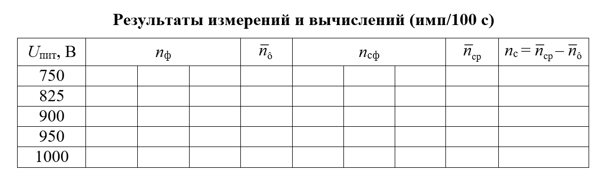

Включите сетевой шнур прибора в сеть и нажмите кнопку «СЕТЬ» на задней панели прибора (при этом загораются индикаторы цифрового табло), нажмите кнопки «СТОП» и «СБРОС». Цифровые индикаторы должны установиться в состояние «0».
Переключатель работы блока дискриминатора будет по умолчанию в верхнее положение «Интегральный».
Ручкой регулятора напряжения блока дискриминатора установите напряжение 750 В. Нажмите кнопку «ПУСК» ПСО, которое начнет считать импульсы, поступающие с блока детектирования. По истечении времени счет автоматически прекращается и на цифровом табло отображается результат измерения.
Проведите три измерения числа n импульсов от гамма-фона и найдите среднее арифметическое значение n(среднее) .
В этом же положении ручки регулятора напряжения дискриминатора (750 В) установите под сцинтиллятор источник гамма-излучения и проведите три измерения числа импульсов n от источника.
Результаты измерений занесите в таблицу.
Далее проведите по три измерения от фона и от источника излучения при напряжениях дискриминатора соответственно 825, 900, 950 и 1000 В и найдите средние арифметические значения. Найдите n(c) по формуле, приведенной в таблице выше.
Для перемещения по виртуальной лаборатории используйте клавиши w, d, s, a.
Перемещайте мышь, чтобы вращать камеру.
Для нажатия кнопок приборов используйте левую клавишу мыши.
Для увеличения напряжения нажимайте лкм, для снижения уровня напряжение нажимайте пкм.
Чтобы отключить озвучку кнопок при наведении на них нажмите клавишу клавиатуры T, а для включения - R.